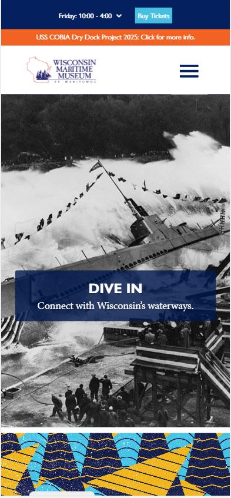
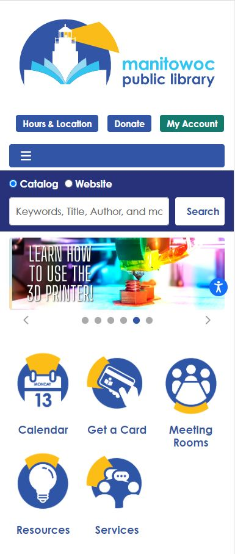
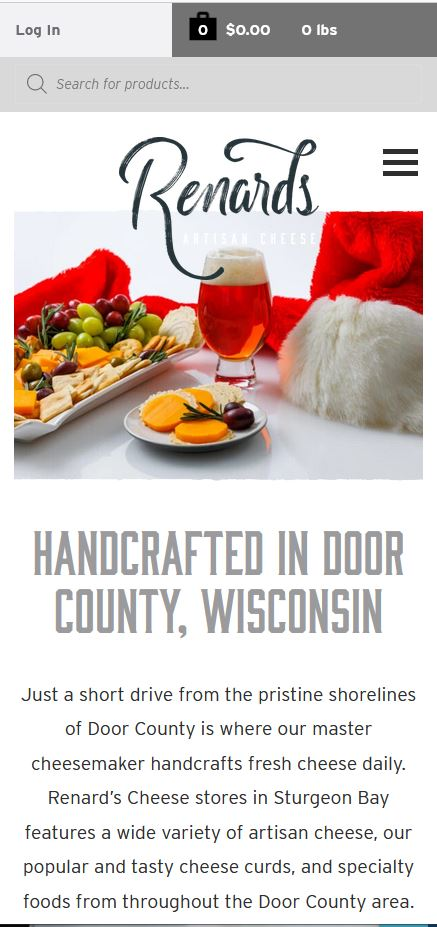

Hick's Law
Wisconsin Maritime Museum
www.wisconsinmaritime.org Hick's law concerns minimizing choices on the landing page to increase user engagement. Here the maritime museum has placed a captivating photo of the launching of a submarine with the text "Dive In". This draws the user in with the invitation to explore the site.
Repetition
Manitowoc Public Library
www.manitowoclibrary.org Repetition in design is a vital way to add cohesiveness to a design. The Manitowoc Library repeats the yellow beam of light from the logo in the icons further down the page, drawing the user to explore the links to important content.
White Space
Renard's Artisenal Cheeses
www.renardscheese.com White space increases the readability of websites. In this example, Renard's uses white space to provide padding around the log in button as well as the search bar and heading. This makes the associated text much easier to read than if it was crammed up against the borders of the box.